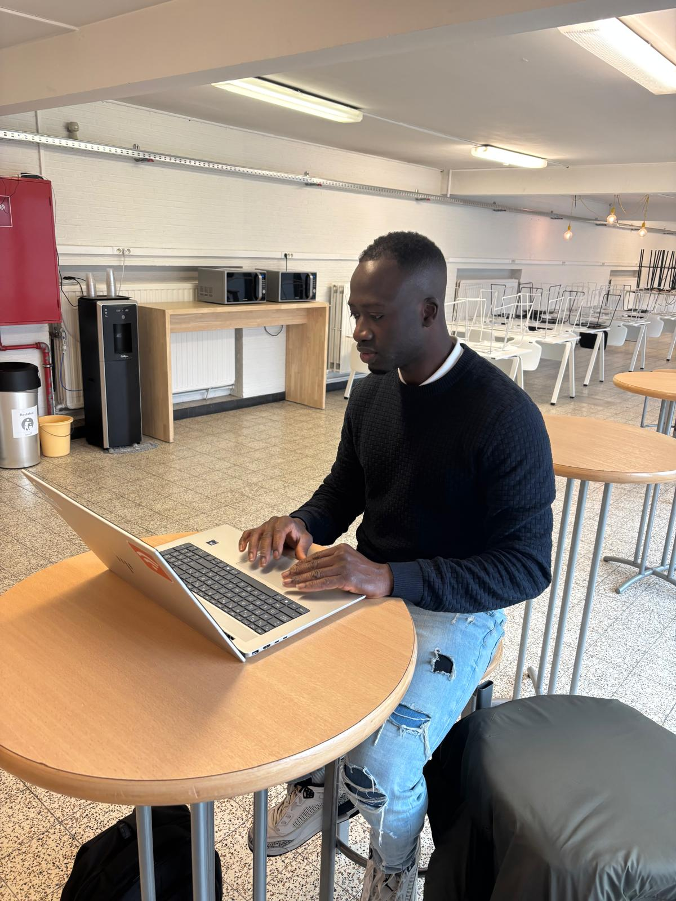

Opnieuw beginnen met studeren is een grote uitdaging. Veel mensen willen hun studies hervatten, maar slagen er niet in door de realiteit van het dagelijkse leven: werk, familie en andere verantwoordelijkheden. Toch geloof ik dat iemand die echt gemotiveerd en vastberaden is, altijd een manier vindt om obstakels te overwinnen en zijn doelen te bereiken.
Daarom heb ik dit jaar beslist om mijn studies opnieuw op te nemen. Al lange tijd droom ik ervan om in de IT-sector te werken. Technologie speelt vandaag een centrale rol in onze samenleving, en ik wil graag actief bijdragen aan deze voortdurend evoluerende wereld.
Waarom programmeren?
Programmeren vormt de kern van de informatica. Dankzij programmeertalen kunnen ontwikkelaars software, websites en applicaties bouwen die ons dagelijks leven vergemakkelijken. Van mobiele apps tot complexe informatiesystemen: programmeren maakt het mogelijk om ideeën om te zetten in concrete digitale oplossingen. Het leren programmeren helpt bovendien om logisch te denken, problemen op te lossen en creatieve oplossingen te ontwikkelen.Ik heb gekozen voor Howest omdat deze hogeschool bekend staat om haar praktijkgerichte aanpak en kwalitatief onderwijs in de IT-sector. Studenten krijgen er niet alleen theoretische kennis, maar werken ook aan concrete projecten die hen voorbereiden op de arbeidsmarkt. Daarnaast beschikt Howest over moderne infrastructuur en ervaren docenten die studenten begeleiden in hun ontwikkeling tot professionele programmeurs.
| w27 | Maandag 16/3 | Dinsdag 17/3 | Woensdag 18/3 | Donderdag 19/3 | Vrijdag 20/3 |
|---|---|---|---|---|---|
| 08:30 - 12:00 |
Databases BST.J.2.304, leslokaal Activerend hoorcollege Kristien ROELS |
Web frontend basics BST.J.2.304, leslokaal Activerend hoorcollege Machteld DE GROEF |
Programming basics BST.J.2.304, leslokaal Activerend hoorcollege William SCHOKKELÉ |
Continuous integration basics BST.J.2.304, leslokaal Activerend hoorcollege Peter VAN DAMME |
|
| 12:00 - 13:00 | Pauze | ||||
| 13:00 - 16:30 |
Programming basics BST.J.2.304, leslokaal Activerend hoorcollege William SCHOKKELÉ |
Programming basics BST.J.2.304, leslokaal Activerend hoorcollege William SCHOKKELÉ |
|||